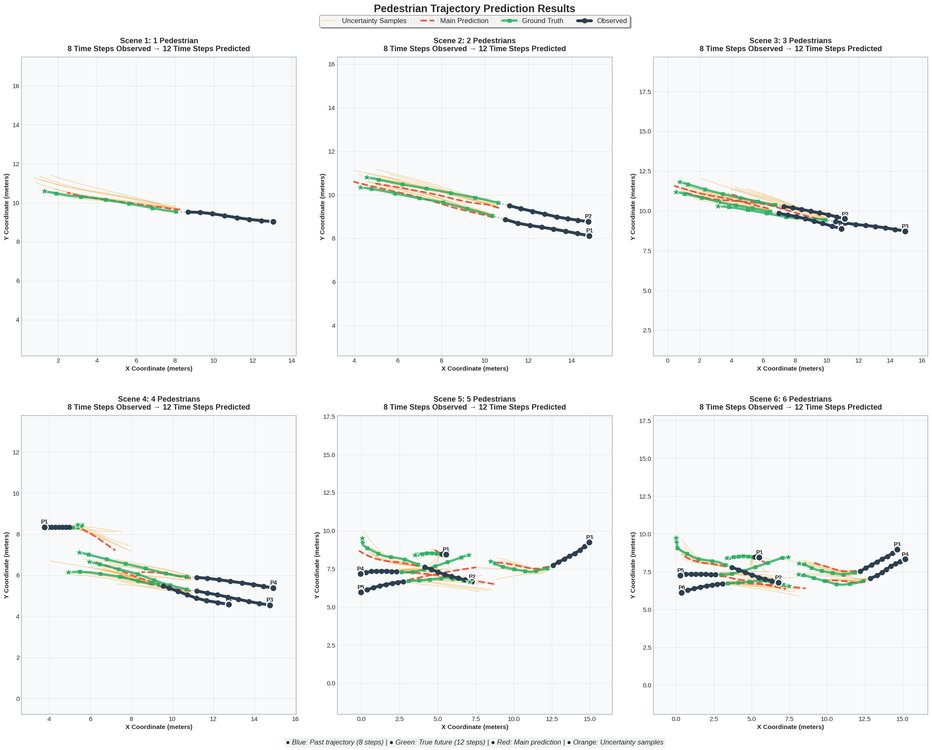
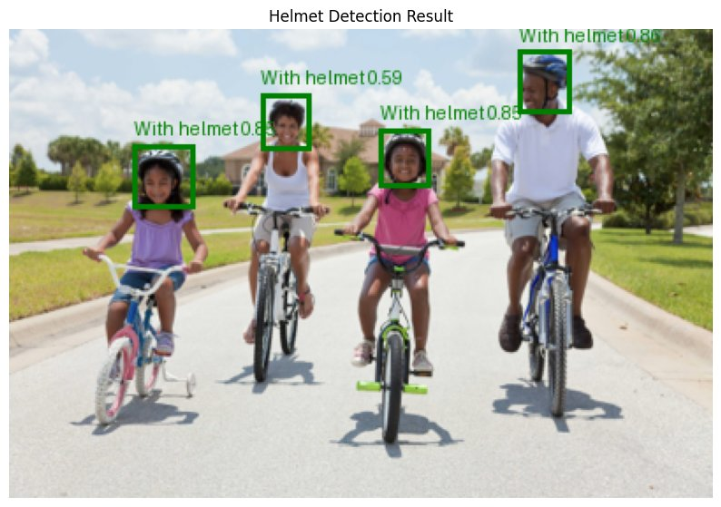
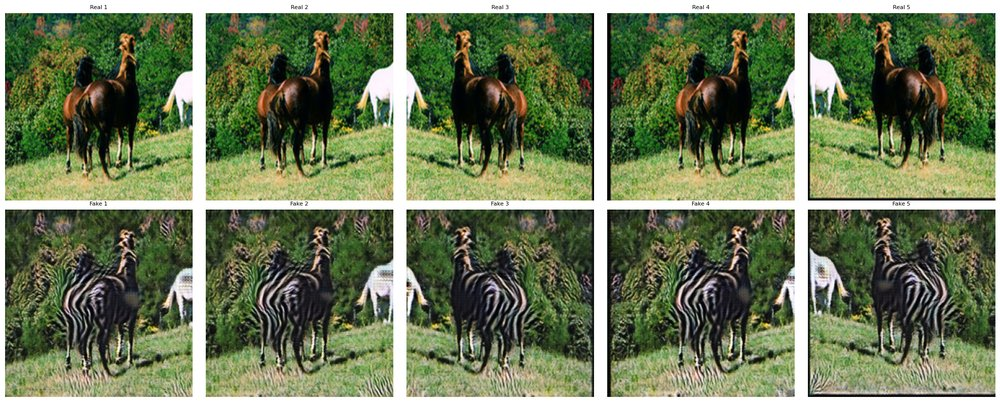
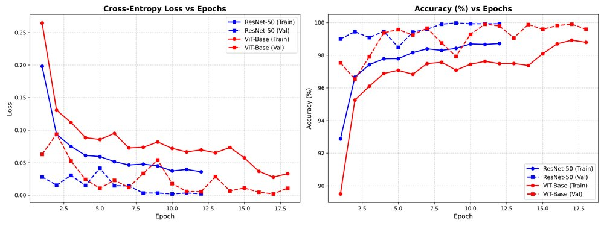
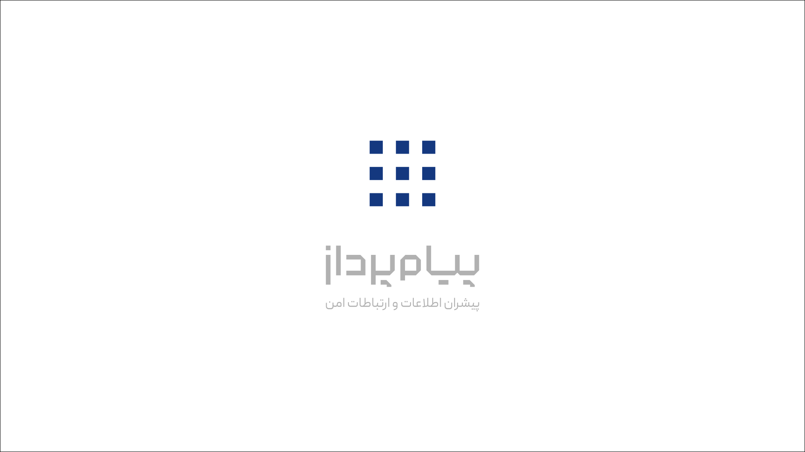

Pedestrian Trajectory Prediction
Multi-agent trajectory forecasting using Spatio-Temporal Graph Convolutions and CVAE-GMM multimodal latent space sampling for anticipating diverse human navigation choices.
Autonomous Systems & Deep Reinforcement Learning Researcher
I am a graduate researcher with a background in Mechatronics and Control Theory. My research focuses on developing intelligent, provably safe decision-making algorithms for autonomous vehicle navigation, multi-agent trajectory forecasting, and deep generative computer vision in dynamic urban environments.
Formal academic training in Mechatronics Engineering, Control Theory, and Machine Learning.
Developing robust algorithms for perception, multi-agent forecasting, and optimal decision-making in dynamic environments.
Designing hybrid Reinforcement Learning (RL) and Imitation Learning formulations with safety guarantees for vehicle motion planning and obstacle avoidance in unstructured dynamic urban traffic.
Modeling crowd interactions and social dynamics using Spatio-Temporal Graph Convolutions (ST-GCNN) paired with Conditional VAEs and Gaussian Mixture Model latent spaces.
Real-time multi-class object detection (YOLOv11), Unpaired Image-to-Image translation with CycleGAN, and multimodal generative Text-to-Video diffusion pipelines.
High-accuracy diagnostic classification on histopathological biopsies using Vision Transformers (ViT) and Deep Residual Networks (ResNet) achieving >99.9% clinical accuracy.
Fully documented open-source implementations, benchmarks, and quantitative reports in PyTorch.

Multi-agent trajectory forecasting using Spatio-Temporal Graph Convolutions and CVAE-GMM multimodal latent space sampling for anticipating diverse human navigation choices.

Real-time multi-class worker safety detection using YOLOv11 seamlessly integrated with Hugging Face generative video diffusion models for synthetic verification.

Dual-generator CycleGAN for unpaired domain translation (Horse ↔ Zebra) with out-of-distribution generalization analysis on Iranian Turkoman horse photographs.

Comparative study of ResNet-50 vs. Vision Transformers (ViT-Base) for 5-class automated diagnosis on 25,000 lung and colon biopsy images, achieving 99.98% accuracy.
Proficiency in deep learning libraries, robotics tools, software engineering, and mathematical foundations.
Academic teaching assistantships and machine learning engineering experience.
